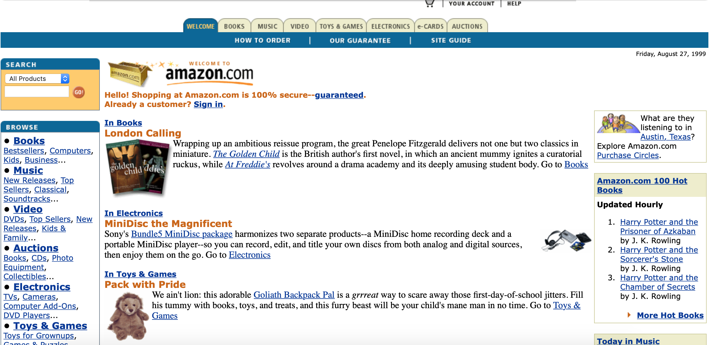
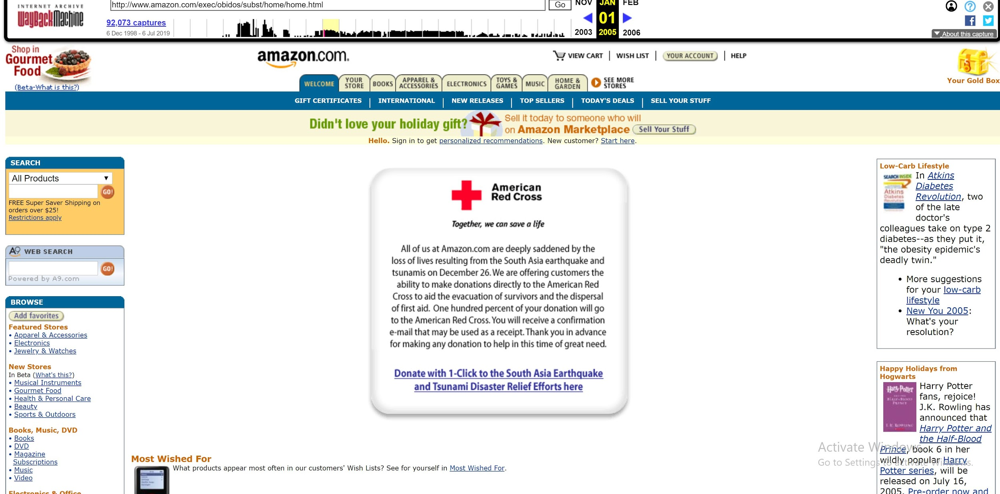
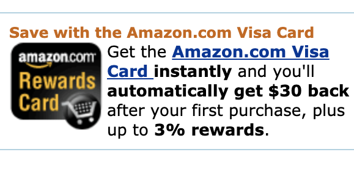
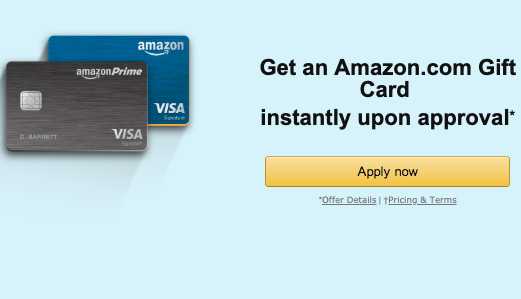
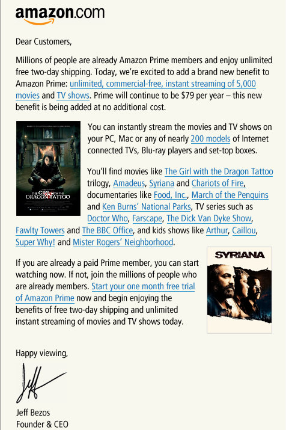
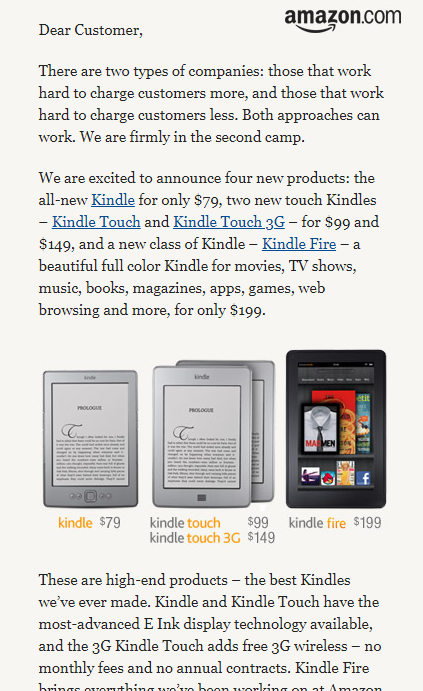

Demonstrating reliability is critical in developing a long-lasting buyer-seller relationship.
Unlike immersive experience, reliability is demonstrated mostly through content. The content emphasized on the homepage has gradually shifted over time to reflect new needs of the consumer and new stages in Amazon's development.
Table of Contents
Consumer Guarantees
In early stages of Amazon’s development (1999), Amazon’s 100% secure consumer guarantee can be seen at the very top of the page, since e-commerce was still relatively new. In fact, trust was so important to Amazon shoppers that when Amazon introduced “Auctions” to compete with eBay that same year, consumers quickly lost interest. Though the tab was there alongside all the other stores, it was a huge misstep and perhaps arrogance on Amazon’s part, thinking that they could convince their consumer pool to buy whatever they introduced.
Charity
In early 2005, Amazon homepage asked for donations for the American Red Cross to assist the individuals affected by the South Asia earthquake and tsunami. This displays that they are reputable and secure enough for people to trust their donation to truly go to the affected and further builds the image that Amazon wants to help individuals rather than become “the big, bad corporation” that wants money.
Visa Card
 The introduction of Amazon Rewards Visa Card in 2006 was an indication that payer is associating their financial details with Amazon, a further step in developing trust between the seller and buyer.
In 2017, Amazon partner with Chase launched a new Prime Rewards Visa Card. Front page ads boast the benefits of no annual fee, 5% cash back for purchases on Amazon products, and no foreign transaction fees, but was exclusive to Prime members. It also provides instant approval to improve the users' experience. The Amazon rewards are deposited as points in a customer’s account and can be redeemed for Amazon items. By doing so, Amazon added more value to Prime membership to attract and build trust with both new and existing customers. As a result, according to a survey by Morgan Stanley, “Amazon Prime members spend about 4.6 times more money on its platform than non-prime members”.
Letters from The CEO
 In February of 2011, in the place of any of the regular front page product advertisements appeared a single letter signed from Bezos. This first letter accompanied the free introduction of Amazon Instant Video to Prime following Netflix’s market pressures on their video service. The letter wiped every advertisement save a very small Kindle one off the page and left the entirety of the page except for the letter, headbars, and navigation sidebar filled with only white space, correlating the importance of the letter. (White space here is about reliability. trust. importance of the topic, mind that) It offered free one month trial of Prime to attract users to Prime, but also made sure to note that it was being offered free of charge and with no price hike to the Prime service.
The pattern would be followed across the period at a rate of approximately one letter every three months, with updates to the Prime package or new products and services each time, with each one marked as being a free improvement or new, cheaper option of a pre-existing product with the price of the new, cheaper variant listed up-front directly on the letter. This evidenced a commitment to making a powerful impression of company trust for Amazon and the creation of more reasons why the user should want to shop at Amazon, because of the benefits that Prime brings, which notably have and still up until today brought a deficit for Amazon in shipping alone, but is continued as a cost-efficient beneficial service for the user whose profit is made in the additional sales that Prime shipping produces.